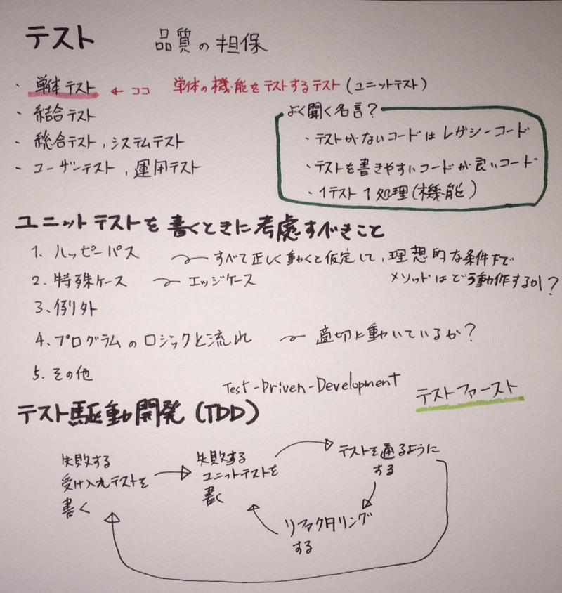

鉄は熱いうちに打て
=============================
Pythonでテストしたい¶
2017-12-18
これは、PyLadies Advent Calendar 2017 の 18日目です。
はじめに¶
エモい話は諦めて、これからテストを掘り下げていこうと思っているのでそちらについて書きます。
最近、本を読んだりインターネットで調べているときにスケッチブックに書いていくのにハマっています。 あとで見返したりできるし、まとめるために要約を考えたりするので結構良いなと思っています。
Python ライブラリ厳選レシピ¶
第１１章テストとデバック¶
Python ライブラリ厳選レシピ の11章の内容を参考に各モジュールについて確認していきます。
pydoc¶
pydocモジュールは、Pythonモジュールから自動的にドキュメントを生成します。 help() と同じ機能をコマンドラインから利用できる他に、-w オプションを付けるとhtmlを出力してくれるそうです。 また、確認用の簡易HTTPサーバーをローカルに起動できるそうです。便利ですね。
実施例はこちら: * pydoc
doctest¶
Pythonファイル中のコメント内の対話的実行例形式で書かれているものが実行されてテストができます。別ファイルに書くこともできるようです。
実施例はこちら: * doctestを触ってみた
unittest¶
他の言語にもあって馴染み深いのがUnitテストですね。
実施例はこちら: * unittestの公式ドキュメントを読んでみた * unittestのテスト前後に実行される処理の確認
unittest.mock¶
テストがオブジェクトに依存する場合にその疑似オブジェクトを用意するためのものですね。
実施例はこちら: * unittest.mock.MagicMockを使ってみる * unittest.mock.patchを使ってみる（デコレータ） * unittest.mock.patchを使ってみる（コンテキストマネージャ）
pdb¶
デバック用のモジュールですね。今度、PyCharmのでバックと合わせて書きたいです。
timeit¶
コードの実行時間を計測するモジュール
pytest¶
サードパーティー製の高度なユニットテストモジュールです。普段はあまり使わないのですが、本も出たし、攻略していきたいです。
実施例はこちら: * pytestを使ってみる
traceback¶
スタックトレース用のモジュールみたいですね。
logging¶
ログ用のモジュールみたいですね。
後半のモジュールは手がつけれていないですが、おいおいやっていきます。
今日の参考書籍:¶
今回、参考にした参考書です。
この本は最近買ったので、ざっとしか読んでないですが1章ずつ噛み締めていきます。

普通の初心者向け本はテストについて書いてあっても触りだけですが、 この本はテストについてきちんと記述があります。 初めて手にするにはPythonの単体テストについてよくまとまっていて読みやすいと思います。

一度読んでおくと良さそうです。こちらもガッツリとは読んでいないので今後読んでいきたいです。